MGMT 17300: Data Mining Lab
Exploratory Data Analysis in R: Visualization and Dashboarding
August 01, 2024
Overview
Lesson Exercise Review
Lesson Question!
Course Learning Milestones
The 8 Key Steps of a Data Mining Project
Introduction to
ggplot()Going Beyond the Basics
The Grammar of Graphics
Themes
Computed Statistics
Positioning Elements
Defining Coordinates
Lesson Exercises Review
Lesson Question!
Course Learning Milestones
Course Learning Milestones
The 8 Key Steps of a Data Mining Project
The 8 Key Steps of a Data Mining Project
Goal Setting
- Define the project’s goal
Data Understanding
- Acquire analysis tools
- Prepare data
- Data summarization
- Data visualization
Insights
- Data mining modeling
- Model validation
- Interpretation and implementation
Introduction to ggplot()
Introduction to ggplot()
The gg in ggplot() refers to the Grammar of Graphics. More than just a graphics package, ggplot() is a set of principles about data visualization and plot construction.
First Steps
We will use a dataset about car characteristics to illustrate the step-by-step construction of a plot. Then, we’ll apply the same principles to a more interesting dataset.
We are going to check the association between a car’s engine size (displ) and fuel efficiency (hwy).
To create the plot, we just need to tell ggplot which dataset to use (data), what type of function (geom_point), and which variables for the x and y axes (mapping).
Grammar of Graphics
Note that the logic of constructing the plots was to create a base plot with the ggplot() function, and then include a layer with the graphical elements.
This is always the logic: create a simple figure and successively add layers with the information we want.
The plot we made is quite simple and has only 3 steps:
- Defining the dataset to be used (
data = mpg) - Defining the type of plot to be used (
geom_point) - Defining the mapping of information in the plot (
mapping = aes(x = displ, y = hwy))
To make more sophisticated plots, we can add more information to the existing layers or add more layers. Before going further, it’s your turn to make a plot.
Going Beyond the Basics
The Grammar of Graphics
We have just gone through all the elements of a complete syntax for information visualization. Let’s review the fundamentals of this grammar:
- Defining the data to be used:
data - Defining the type of graphical element:
geom - Linking data and graphical elements:
mapping - Defining the statistic to be displayed:
stat - Positioning graphical elements:
position - Defining coordinates:
coord - Graphically separating different elements:
facet
Mastering these fundamentals gives you enormous freedom to visualize any type of information! Let’s move on to a more complex example.
Including More Information in a Layer
The mpg dataset has a variable (class) with the type of car: “compact”, “SUV”, etc. We can include this information by coloring each class.
Be Careful with What Goes Inside and Outside the Parentheses
If you want to color all the points green, regardless of the car type, the code will have a difference that, at first, seems subtle.
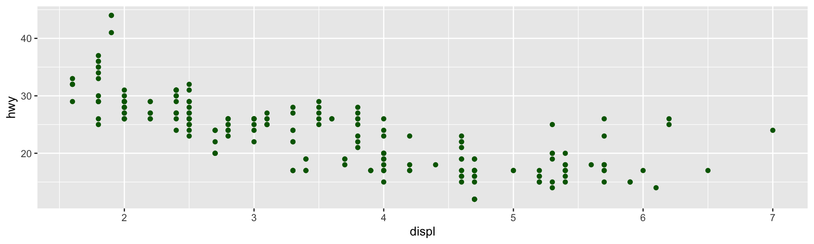Be Careful with What Goes Inside and Outside the Parentheses
See the difference! What happened?
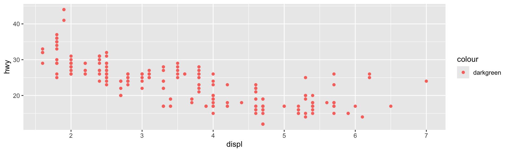Adding Another Layer
Perhaps, even when giving a color to each car category, you found that the difference was not very clear. One option is to place each category on its own scale, which we can do with the facet_wrap() function.
More than One Piece of Information in the Same Plot
Adding new layers also serves to place different elements in the plot. If we want to draw a fitting curve on the original plot, just add the geom_smooth() element.
Themes
Themes
Beyond the structural elements we’ve seen, a good data presentation also depends on aesthetic adjustments. Let’s briefly cover some possibilities.
ggplot already comes with some predefined themes. You are not obliged to like that gray background: let’s reproduce the plot of the relationship between engine size and efficiency, using the themes theme_bw, theme_light, theme_dark, theme_minimal, and theme_classic.
Original Plot

Black and White
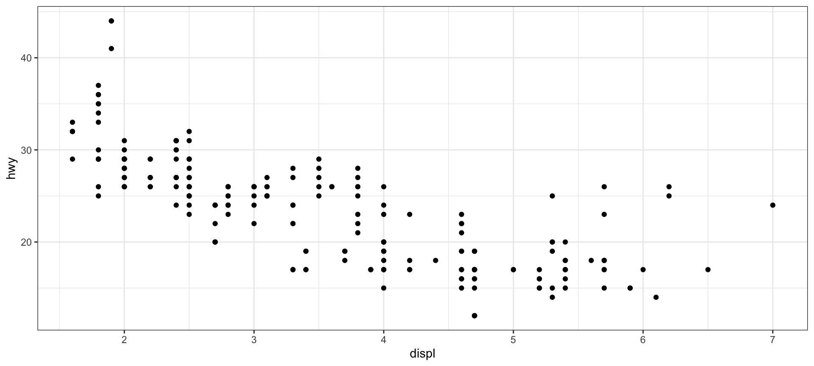Light
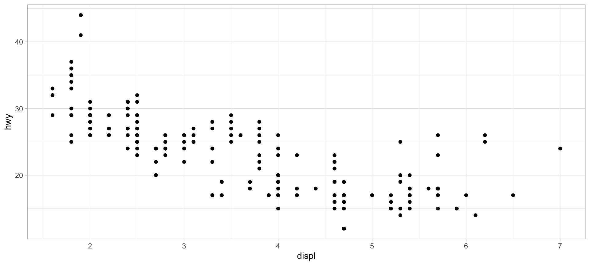Dark
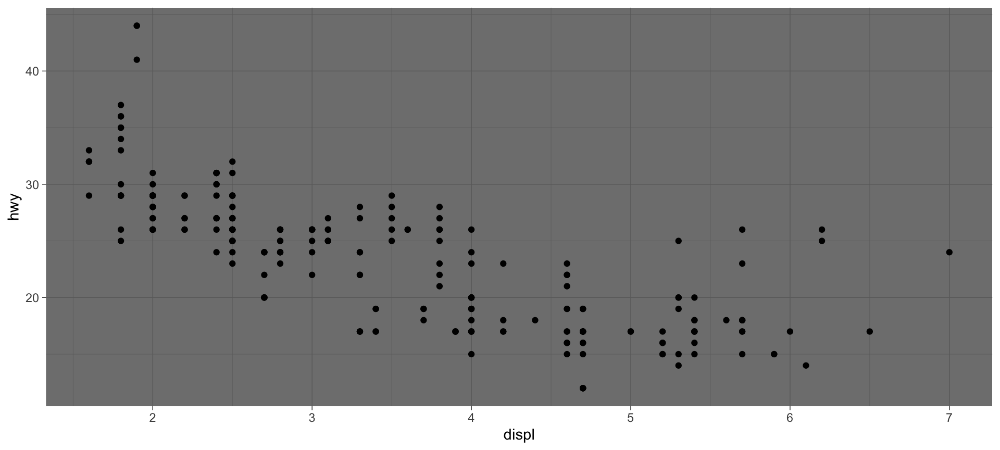Minimal
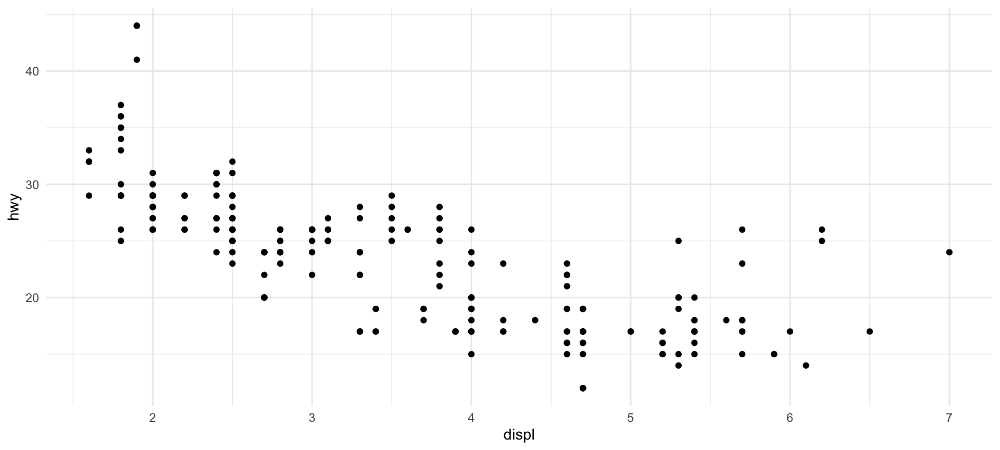Classic
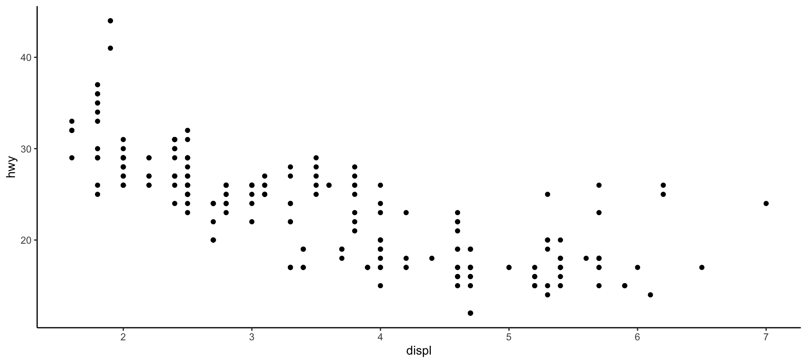Other Themes?
For those who didn’t like these themes, there are two options:
You can change absolutely everything in the plot with the
theme()function, element by element. For that, you need to have a good eye for graphic design, as well as patience to tweak each detail. See the number of arguments that can be changed with the?themecommand.Install external packages with ready-made themes. Two that I really like are ggthemes and hrbrthemes
On Google, you can also find many other packages.
Computed Statistics
Types of Plots
All the examples above were made with scatter plots. ggplot supports many other types of plots: bars, areas, lines, pie charts (ugh!), etc.
The important thing is that the logic is the same! What changes is the type of statistic relevant for each plot. In the scatter plot, we used the values of the observations in our dataset, but for other plots, we need other statistics: counts for bar plots, predicted values for fit curves, dispersion measures for boxplots, etc.
Let’s load a new dataset to illustrate this point and play a bit with bar plots.
Simple Bar Plot
The code for a bar plot follows the same reasoning as the previous plots, and you’ll notice that the only thing we need to change is the type of function used to map the data: instead of geom_point(), we use geom_bar().
Calculating Statistics
Unlike the scatter plot, we don’t need to specify anywhere the variable that contains the number of diamonds for each type of cut (even because this variable doesn’t exist in the dataset!).
ggplot() recognizes that when we use geom_bar(), the relevant statistic is the count within each category and calculates this automatically. Other functions calculate other statistics by default (you can consult the stat argument in ?geom_bar).

Calculating Statistics
Every plot has a default statistic, but we can make changes to relate two different variables, for example:
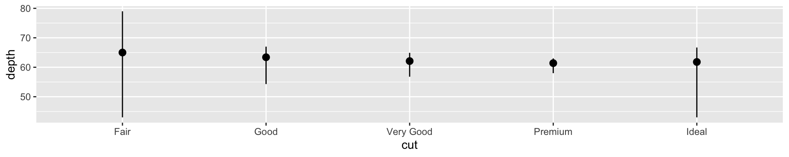Positioning Elements
Changing the Colors of Bars
Similar to the scatter plot, we can change the color of the bars with the fill argument.
Changing the Colors of Bars
Again, similar to the scatter plot, we can change the color of the bars with the fill argument (but this is not very useful—why?)

Defining Colors by Clarity
It would be more useful to define the colors by some information that is not already conveyed by the plot. For example, discriminating the diamonds by clarity.
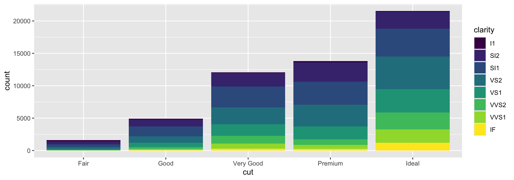Adjusting the Positioning of Elements
The idea of filling (fill) is important because it can also be used to alter the arrangement of graphical elements. For example, if we want a bar plot with relative values, we can fill the entire plotting area:
Adjusting the Positioning of Elements
Alternatively, we might want the graphical elements to “dodge” each other, so they are not stacked:
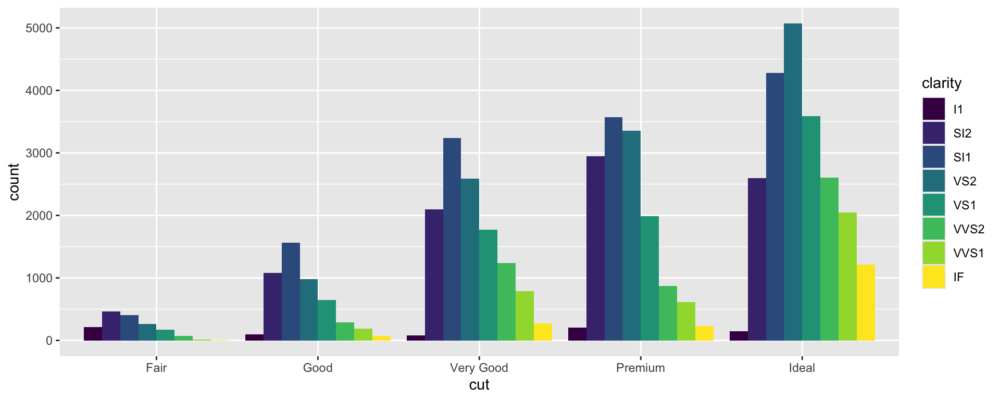Defining Coordinates
Defining Coordinates
Another way to change the arrangement of elements in the plot is to alter their coordinates. Let’s return to our plot of diamonds by cut:

Defining Coordinates
A first relatively obvious coordinate transformation is to make the bars horizontal. To do this, simply use the coord_flip() function.
Defining Coordinates
A less obvious transformation is to make the bars radiate from a single point with radial dispersion.
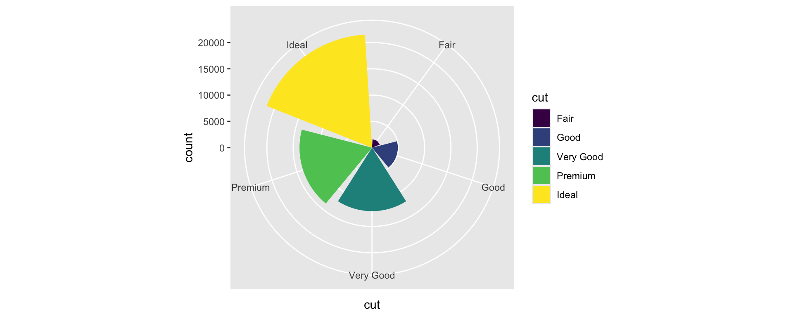And the Pie Chart?

Animations
To Create Animations, Use the gganimate Package
Result

Dynamic X-Axis

Trailing Points

Countries Separated by Continent
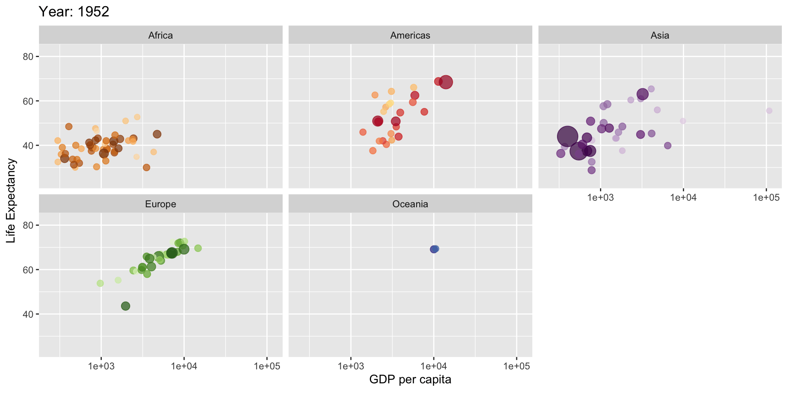Datasaurus
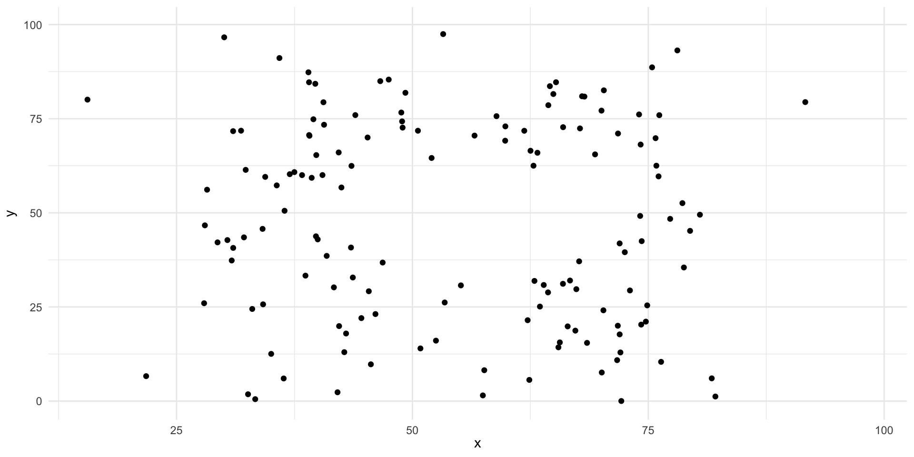Temperatures
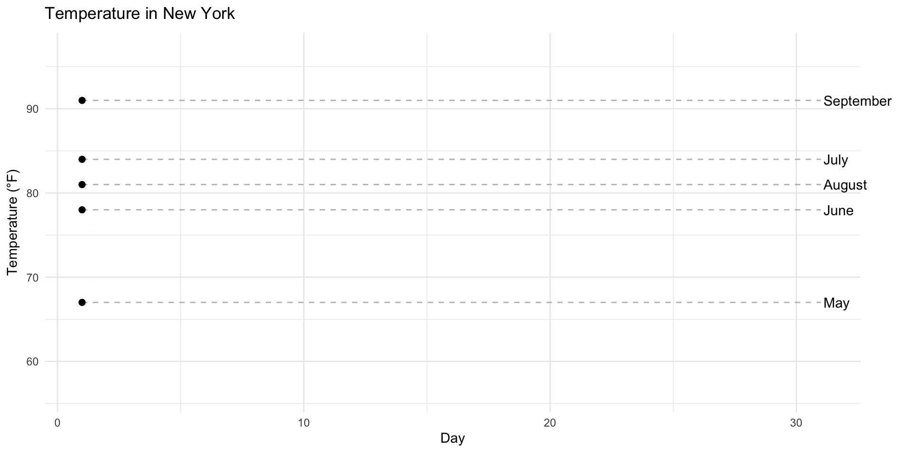Conclusion
Conclusion
What we’ve seen is more than just a tool for creating plots. It’s a complete syntax that allows you to think about the information you want to convey and produce practically any type of plot that suits your needs.
ggplot() allows for an infinite number of plot types. It wouldn’t be worthwhile to do an extensive survey at this time, as that would be tedious and would end up hindering the absorption of the fundamentals of the grammar of graphics.
Summary
Summary
Main Takeaways from this lecture:
Understanding
ggplot()and the Grammar of Graphics: Plots are constructed by creating a base plot and successively adding layers of graphical elements.Advanced Plotting Techniques:
- Adding more layers to include additional information (e.g.,
geom_smooth()for trend lines). - Using
facet_wrap()andfacet_grid()to create multi-panel plots for different subsets of data. - Transforming plots with coordinate functions like
coord_flip()for horizontal plots andcoord_polar()for radial plots.
- Adding more layers to include additional information (e.g.,
Working with Computed Statistics: Recognize that
ggplot2can compute statistics automatically (e.g., counts ingeom_bar()).Creating Animations with
gganimate: Animations can illustrate changes over time or transitions between states in the data.Effective Data Visualization Practices
- Emphasize the importance of choosing the right type of plot for the data and the message.
- Understand that effective visualizations are crucial for exploratory data analysis and communicating insights.
- Apply the Grammar of Graphics principles to create clear, informative, and aesthetically pleasing plots.
Thank you!
Data Mining Lab